{% endif %}
{% if distance.is_some() || elevation_gain.is_some() || average_speed.is_some() || top_speed.is_some() %}
{% if let Some(distance) = distance %}

Rode {{ distance }} miles
{% endif %}
{% if let Some(elevation_gain) = elevation_gain %}
Climbed {{ elevation_gain }} feet
{% endif %}
{% if let Some(average_speed) = average_speed %}

Average speed of {{ average_speed }} mph
{% endif %}
{% if let Some(top_speed) = top_speed %}
Top speed of {{ top_speed }} mph
{% endif %}